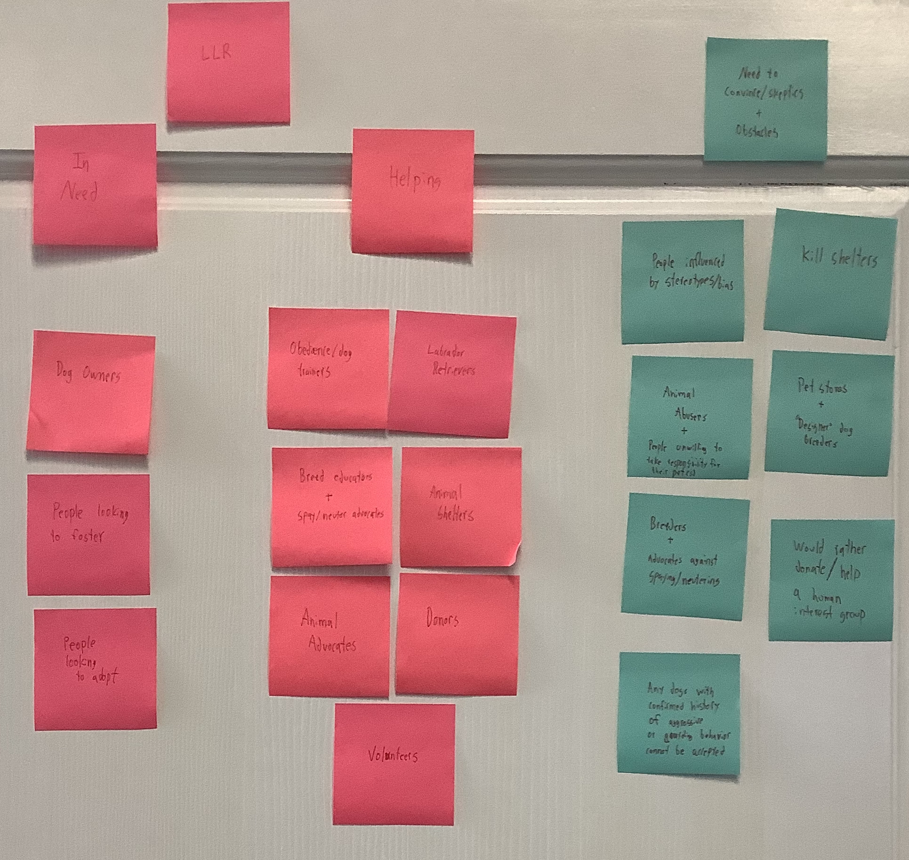

Audience and Goals
Who is the client reaching out to and what do they attempting to convey?
Identifing Audience and Overarching Goals

Initial Brainstorming
We began our brainstorming with an exercise to determine all possible users of the site as well as any obstacles or skeptics that may work against the organization.These were organized into three groups: Those in Need, Those Helping, and Obstacles.
- Those in Need:This category includes dog owners, animal shelters and people looking to foster or adopt.
- Those Helping: This category includes obedience/dog trainers, breed educators, spay/neuter advocates,animal shelters, animal advoactes, donors, and volunteers.
- Obstacles: This category includes the influence of stereotypes and bias, kill shelters, animal abusers, people who do not take responsibility for caring for a dog, pet stores, "designer" dog breeders, advocates against sprying/neutering, and people who would rather donate/help a human interest organization.
Focused Ideation


Specific Goals
| User | Goal | Course of Action |
|---|---|---|
| People Looking to Adopt | To adopt a labrador and learn how to properly care for their new and existing dog(s). | Restructure existing LLR website content to be more conducive to user interaction, streamline website flow, and make adoption information and information on current rescues more accessible. Also make information on the benifits of having a dog, infromation about what the dogs are being rescued from, and content to increase awareness of the special needs of some rescues more easily availible. |
| People Looking to Foster | Looking to foster a lab. | Restructure information about fostering and the special needs of some of the rescued dogs so thst it is more user accessible. Make it into its own page rather than added onto another page. |
| Donors/Volunteers | People looking to donate to the organization or volunteer their time in ways other than fostering. | Condense the donor and volunteer information into one page with a link to the relevant forms. Rather than having the full forms be part of the webpage. |
Interviews
Client Interview
Client Contact: Amy Fabri
- What are the main goals that you are looking to accomplish with the LLR website?
- Source of information, FAQ, and what to expect.
- What audiences are you looking to address?
- People looking to educate themselves and people looking to adopt are the main focus.
- What specific design parameters would you be looking to include in the website?
- Logo was done by Guy Smally and has not been updated since its creation. Being based in Charleston influenced the logo design.
- How are you looking to display dogs available for adoption?
- Integrated petfinder form is how it is currently done. Issues with Petfinder include: it not updating quickly, inquiries on specific dogs, no direction to website and information there (special needs, etc).
- Do you think adding information about breed education, special needs, and situations that dogs are rescued from to the website would be helpful of to the purpose of the site?
- Yes, medical problems are common. Information about things like that would be helpful and informative. Medical needs, etc
- I see that your Facebook has a marketplace with various merchandise, have you considered adding a version of it to the website?
- It would be great to integrate into the site. Maybe linked to content.
- How does your donation process work?
- Button on site links to Paypal.
- Is there anything that we haven't talked about that you would like to have included?
- Reformatting content, more imagery, slideshow on main screen, donate button more prominent. Links more prominent. Break up blocks of text. Important disclaimers that can be expanded upon (rollover button idea)
User Interview
- Please describe your experience with LLR.
- I have been a supported for 8-10 years and have adopted 1 lab from them.
- How did you first learn about the organization?
- Through their upstate representative and their facebook page.
- Was their website helpful?
- Minimally helpful since they do not link Facebook and do not cross post well. Cute fundraising method but it is not an effective way to view adoptions and other information.
- How could the website be improved?
- Adding integrations for social media posts to be shown on site. More push toward site. Current focus on is on social media. Home base is on social media rather than the website. Need to constantly update website with new info.
- Is the website easy to navigate?
- Confusing, not clear, out of date, mobile version
- Did you find yourself skipping groups of information due to large blocks of text?
- Yes, it was hard to read and navigate quickly.
- Was any information missing or difficult to find?
- Links to various forms and links to social media.
- Is there any other information that you think would be helpful or important?
- It is a fabulous organization but they need to find a way to break down and consolidate groups of information.